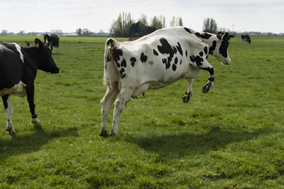

Farmers are suffering from data overload and feel a lack of control of their data. The FarMAI is the first tool that give control back to the farmer. The farmer owns the data about their herd, data about their land, data about their farm practices, about the time they work on the farm data about the way the farmer protects the environment. The farmer can use this data to show the consumer that they as custodians of the environment are taking care of the environment, their naimals and providing the consumer with a quality product. While also providing a livelihood for the farmer and their family.
FarMAI is the first Smart Dairy Management System that does not
require spending money on expensive hardware. Our application is the
first that is based on data.
Our algorithms are based on the data that is collected from the
farmer, real-time data from sensors on the farm and external data
sources. The insights devleoped are on an individual Farm basis not on
region or country based. FarMAI provides the farmer with the average
running cost per cow and the average income per cow. This application
will also provide the farmer with the average profit per cow. Helping
the farmer to make better decisions on the farm.
Herd Management
Having all the information about the cows health in one place will help the farmer to make better but also provide better care of the cows. The farmer will be able to see the cows health history and administer the correct medication to the cow and take the correct action to help the cow.

Cow Profit Monitor
With all the inputs available, the cows are rated on their performance. On a continual basis, our application makes the decision easier for the farmer. The farmer will be able to see which cows are making a profit and which
AgriIoT
Our tool also takes external information into account. Initially, we will be using the weather forecast to help the farmer make better decisions. The weather forecast will be used to help the farmer decide when to feed the cows and when to milk the cows. But also will be used to alert the farmer of any potential weather hazards that may affect the cows. If the farmer has installed a local weather station that picks up ground conditions in real-time; i.e hoose. In addition drop in milk production will be detected on a per milking basis.
Farm Alerts
Farmers are notified in real-time of events based on:
- Weather
- Animal Health
- Animal Performance
- Risk of Hoose
- Animal Feed
- Animal Winter Fodder
- Animal Milk Production
- Animal Slurry Levels
- On Farm Weather Conditions
- Slurry Storage Capacity Calculator from Teagasc
- % Fill Capacity of Slurry Tank
- Fill volume of Slurry Tank
- Predicted Fill Date of Slurry Tank based on tank specific Machine Learning Algorithm
- Slurry Tank Level Alerts
Slurry Management
Slurry Management is important for every farmer. The FarMAI application will help the farmer to manage the slurry on the farm. The farmer will be able to see the slurry levels in the tanks and will be alerted when the slurry levels are too high. Included are;
Winter Fodder Management
Farmers should complete a winter fodder budget to evaluate the silage in the yard compared to the silage required for the winter. When completing the winter fodder budget, it is important to give a buffer of 4 to 6 weeks in case of early winter or late turnout